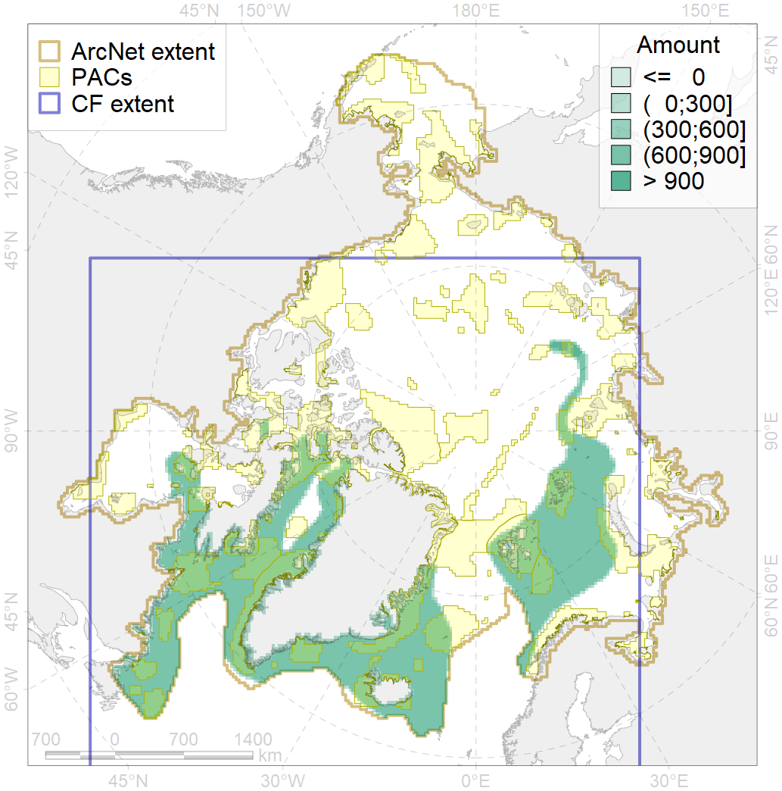
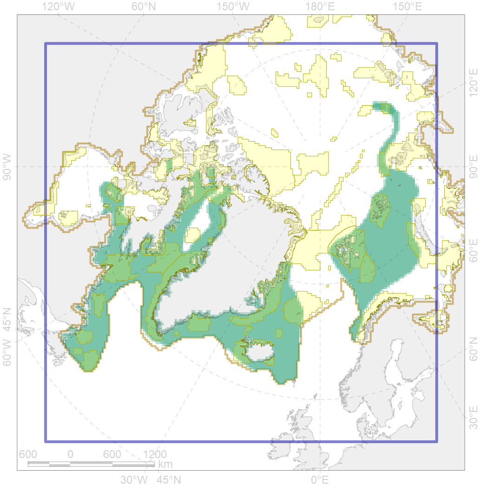

4059

| CF ID | 4059 |
| CF Name | Range of the Greenland Halibut (Reinhardtius hippoglossoides) |
| Time Period | 1940s-2010s |
| Source(s) | Chernova, 2011; Чернова, 2017; Coad Reist 2018; Mecklenburg et al., 2018 |
| Seasonality | January-December |
| Depth Horizon | usually 200-2000 m |
| Methodology | Compiled from literature sources based on field observations |
| Author Name | N. Chernova |
| Notes | Chernova (2011) compiled the data of: Andriashev, 1954; Borkin, 1983, 1994; Nielsen, 1986; Coad, Reist, 2004; Jørgensen et al., 2005; Byrkjedal, Høines, 2007; Stiansen, Filin, 2008; Ecosystem…, 2008; Møller, et al., 2010 |
| Conservation Target Set in the Scenario | 0.03 |
| Conservation Target Achieved in the Scenario | 0.357 (Scenario: 1188.8%) |
| PAC ID | Proportion in the PAC | Contribution to ArcNet Target Achievement | PAC’s Contribution to the Achieved Target |
|---|---|---|---|
| 14 | 0.9% | 16.4% | 1.4% |
| 19 | 0.0% | 0.8% | 0.1% |
| 21 | 0.9% | 26.8% | 2.3% |
| 22 | 1.7% | 56.1% | 4.7% |
| 27 | 0.1% | 3.3% | 0.3% |
| 29 | 0.0% | 0.0% | 0.0% |
| 30 | 2.8% | 91.1% | 7.7% |
| 31 | 1.5% | 46.2% | 3.9% |
| 32 | 3.6% | 106.7% | 9.0% |
| 34 | 1.7% | 51.9% | 4.4% |
| 36 | 0.2% | 6.1% | 0.5% |
| 37 | 0.2% | 2.8% | 0.2% |
| 38 | 1.1% | 29.5% | 2.5% |
| 39 | 0.3% | 8.1% | 0.7% |
| 40 | 0.0% | 0.8% | 0.1% |
| 41 | 0.2% | 3.4% | 0.3% |
| 42 | 1.3% | 39.2% | 3.3% |
| 43 | 0.1% | 2.3% | 0.2% |
| 44 | 4.4% | 131.6% | 11.1% |
| 45 | 2.3% | 71.6% | 6.0% |
| 46 | 0.7% | 21.0% | 1.8% |
| 47 | 0.0% | 0.5% | 0.0% |
| 48 | 0.1% | 2.1% | 0.2% |
| 49 | 0.3% | 8.9% | 0.7% |
| 50 | 0.1% | 2.3% | 0.2% |
| 51 | 1.0% | 32.7% | 2.7% |
| 52 | 2.0% | 64.6% | 5.4% |
| 65 | 0.2% | 6.6% | 0.6% |
| 67 | 0.7% | 21.4% | 1.8% |
| 72 | 0.1% | 1.1% | 0.1% |
| 73 | 0.6% | 17.5% | 1.5% |
| 75 | 0.0% | 0.4% | 0.0% |
| 76 | 2.9% | 88.5% | 7.4% |
| 77 | 0.9% | 26.3% | 2.2% |
| 78 | 0.0% | 0.3% | 0.0% |
| 79 | 0.8% | 22.1% | 1.9% |
| 80 | 0.2% | 6.6% | 0.6% |
| 81 | 1.2% | 35.2% | 3.0% |
| 82 | 0.0% | 0.0% | 0.0% |
| 83 | 0.4% | 4.7% | 0.4% |
| inner | 35.6% | 1057.5% | 88.9% |
| outer | 63.4% | 131.4% | 11.1% |